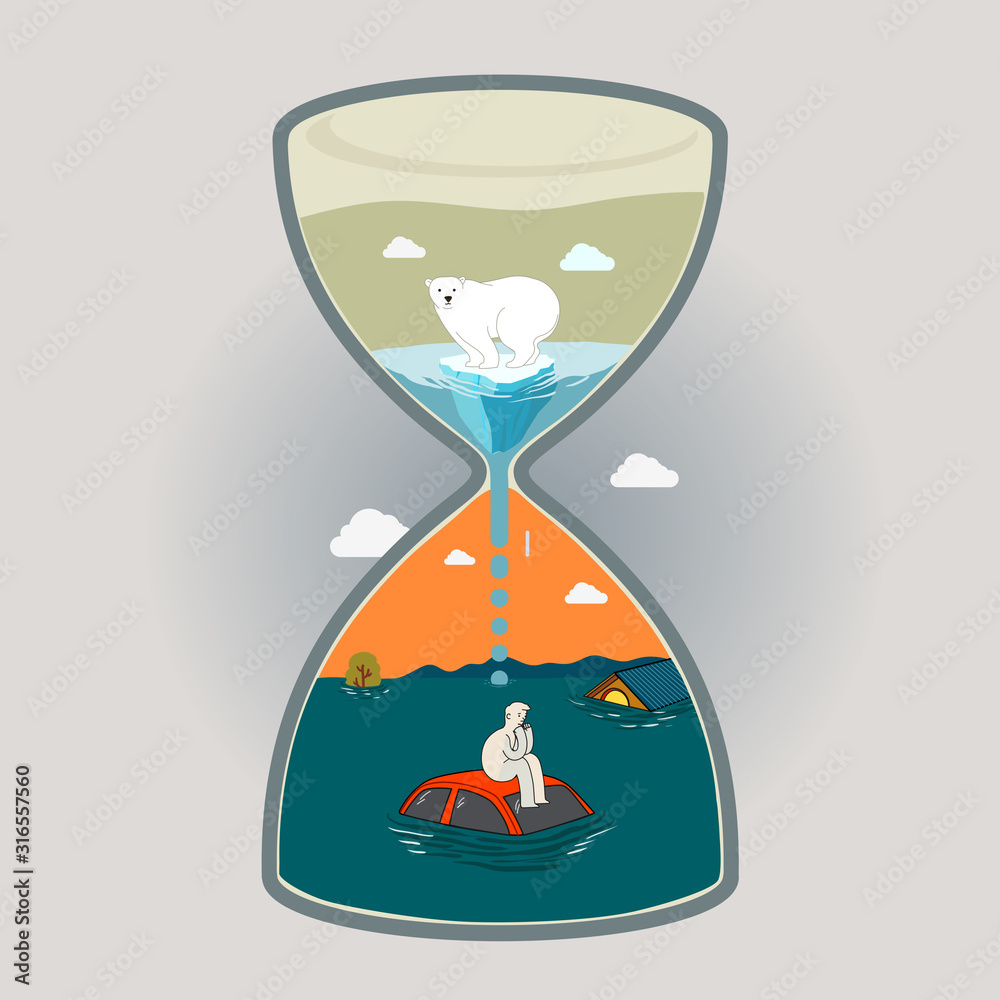
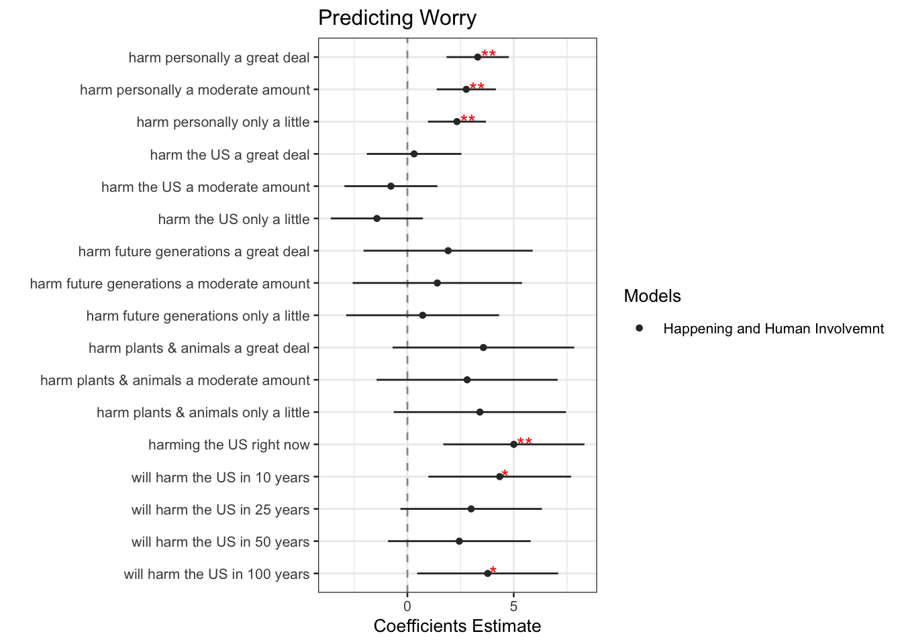

# necessary libraries
library(tidyverse)
library(haven)
library(dplyr)
library(ggplot2)
library(pollster)
library(knitr)
library(corrplot)
library(Hmisc)
library(nnet)
library(stargazer)
library(MASS)
library(broom)
library(plotly)Why are some individuals more prone to worry about climate change?
# uploading data
ccamData <- read_sav("CCAMData2023.sav")# creating my smaller dataset!
myData <- ccamData %>%
dplyr::select(wave, year, happening, cause_recoded, worry, harm_personally, harm_US, harm_future_gen, harm_plants_animals,
when_harm_US, region9, generation, educ_category) %>%
rename("education" = "educ_category")
# subsetting with data for the last available wave, Oct 2023
myData <- subset(myData, wave == 29)# making variables numeric or factors
myData$wave <- as.numeric(myData$wave)
myData$happening <- as.factor(myData$happening)
myData$cause_recoded <- as.factor(myData$cause_recoded)
myData$generation <- as.factor(myData$generation)
myData$education <- as.factor(myData$education)
myData$worry <- as.numeric(myData$worry)
myData$harm_personally <- as.factor(myData$harm_personally)
myData$harm_US <- as.factor(myData$harm_US)
myData$harm_future_gen <- as.factor(myData$harm_future_gen)
myData$harm_plants_animals <- as.factor(myData$harm_plants_animals)
myData$when_harm_US <- as.factor(myData$when_harm_US)
myData$region9 <- as.factor(myData$region9)# recoding variables
myData <- myData %>%
mutate(wave = recode(wave, "29" = "Oct 2023"),
cause_recoded = recode(cause_recoded, "3" = "CC_not_happening", "4" = "Nat_changes", "5" = "Human_act_and_nat_changes",
"6" = "human_act"),
happening = recode(happening, "1" = "No", "3" = "Yes"),
harm_personally = recode(harm_personally, "1" = "Not at all", "2" = "Only a little", "3" = "A moderate amount",
"4" = "A great deal"),
harm_US = recode(harm_US, "1" = "Not at all", "2" = "Only a little", "3" = "A moderate amount", "4" = "A great deal"),
harm_future_gen = recode(harm_future_gen, "1" = "Not at all", "2" = "Only a little", "3" = "A moderate amount",
"4" = "A great deal"),
harm_plants_animals = recode(harm_plants_animals, "1" = "Not at all", "2" = "Only a little", "3" = "A moderate amount",
"4" = "A great deal"),
when_harm_US = recode(when_harm_US, "1" = "Never", "2" = "one_hun_years", "3" = "fifty_years", "4" = "twn_five_years",
"5" = "ten_years", "6" = "right_now"),
region9 = recode(region9, "1" = "New England", "2" = " Mid_Atlantic", "3" = "EN_Central", "4" = "WN_Central",
"5" = "S_Atlantic", "6" = "ES_Central", "7" = "WS_Central", "8" = "Mountain", "9" = "Pacific"),
generation = recode(generation, "1" = "GenZ", "2" = "Millennials", "3" = "GenerationX", "4" = "BabyBoomers",
"5" = "Silent", "6" = "Greatest"),
education = recode(education, "1" = "lessHighSchool", "2" = "highSchool", "3" = "someCollege",
"4" = "bachelorDegreeUp"))# getting rid of data where people refused to answer (-1) or said they "don't know" (0)
myData = filter(myData, !(cause_recoded %in% c("-1", "1", "2")))
myData = filter(myData, worry != "-1")
myData = filter(myData, !(happening %in% c("-1", "2"))) # 2 is "don't know"
myData = filter(myData, !(harm_personally %in% c("-1", "0")))
myData = filter(myData, !(harm_US %in% c("-1", "0")))
myData = filter(myData, !(harm_future_gen %in% c("-1", "0")))
myData = filter(myData, !(harm_plants_animals %in% c("-1", "0")))
myData = filter(myData, generation != "Greatest") # get rid of Greatest because they only had 1 respondent in 2021
myData = filter(myData, when_harm_US != "-1")# creating the reference variable now
myData$happening <- relevel(myData$happening, ref = "No")
myData$education <- relevel(myData$education, ref = "lessHighSchool")
myData$cause_recoded <- relevel(myData$cause_recoded, ref = "Human_act_and_nat_changes")
myData$harm_personally <- relevel(myData$harm_personally, ref = "Not at all")
myData$harm_US <- relevel(myData$harm_US, ref = "Not at all")
myData$harm_future_gen <- relevel(myData$harm_future_gen, ref = "Not at all")
myData$harm_plants_animals <- relevel(myData$harm_plants_animals, ref = "Not at all")
myData$when_harm_US <- relevel(myData$when_harm_US, ref = "Never")sub_hap <- myData
# only getting people you believe climate change is happening
sub_hap <- filter(sub_hap, happening != "No")sub_cause_hap <- sub_hap
sub_cause_hap <- filter(sub_cause_hap, !(cause_recoded %in% c("CC_not_happening", "Nat_changes")))fitData3 <- sub_cause_hap %>%
mutate(worry = recode(worry, "1" = "Not at all worried", "2" = "Not very worried", "3" = "Somewhat worried", "4" = "Very worried"))
fitData3$worry <- as.factor(fitData3$worry)
fitwM3 <- polr(worry ~ happening + cause_recoded + harm_personally + harm_US + harm_future_gen + harm_plants_animals +
when_harm_US + generation + education, data = fitData3, Hess = T)Warning: glm.fit: fitted probabilities numerically 0 or 1 occurredWarning in polr(worry ~ happening + cause_recoded + harm_personally + harm_US +
: design appears to be rank-deficient, so dropping some coefsIntroduction
Column
Hour Glass of Climate Change (Adobe Stock)

Intro of Topic
What did I study?
- Why are some individuals more prone to worry about climate change? Based on Perceived Harm to Different Groups and the Believed Timing of when Climate Change will Harm Americans
Believed Outcomes
- I think the more an American believes climate change will harm living things at a more intense level, the more likely they are to worry about climate change at a higher level.
- I think that the timing of when Americans believe climate change start will harming the US will also affect their worry level.
Intended Audience
This project is intended for a general audience who is interested to learn more about how climate change impacts a person’s worry levels and why.
Column
Previous Research
I previously researched the same question: ‘Why are some Americans more prone to worry about climate change?’ with the same survey. However, I was focusing on demographics rather than perceived potential harm or the believed timing of when climate change will harm the US.
When I was trying to think about how I could improve my old project, there was a research finding that inspired me to look into harm level for different groups. They found people are worried about climate change because they believe their children will face the consequences but not themselves (Threadgold, 2012). I wanted to see if that conclusion held up with perceived harm levels for different groups (personal, US, future generations, and plants and animals). I was inspired to look into timing as well because there is a report that found that 39% of American respondents believed they were being affected by climate change right now (Narawad and Julian Wettengel, 2024). Unfortunately, there is little to no research on perceived harm level for different groups and how they affect worry. Nor are there studies that focus on the possible link of worrying about climate change and the belief of when climate change will start harming people living the United States. From what I have gathered, I am the first to study such variables regarding climate change worry.
Dataset
The data set I used to answer my question is from the Yale Program on Climate Change Communication, which is a nationally representative survey of U.S. adults. The survey I focused on was from October 2023 that contains 1,003 respondents. I used 10 variables from the survey to help with my study. My most important variables:
- Outcome: level of worry
- Believed to effect worry levels (explanatory):
- level of harm for four specific groups (personal, US, future generations, and plants and animals)
- when climate change will begin to harm the US
The model I used was Ordinal Logistic Regression since all of my important variables are ordered categorical variables (i.e. not at all worried, not very worried, somewhat worried, very worried) rather than continuous numbers (Cheng Hua, 2021). In my model, I also have to consider other factors that could influence the results by including them in my model. The variables are:
- happening, caused by human activities, generation, and education.
Worry and Harms
Column
Worry About Climate Change
graph_myD <- myData %>%
group_by(worry) %>%
summarise(count = n(),
percentage = round((n() / nrow(myData)) * 100), 2) %>%
mutate(worry = recode(worry,
"1" = "Not at all worried",
"2" = "Not very worried",
"3" = "Somewhat worried",
"4" = "Very worried"))
p1 <- plot_ly(data = graph_myD, x = ~ worry,
y = ~ percentage,
text = ~ paste(percentage, "%"),
textposition = "inside",
hovertext = ~paste(worry, "\n", "Percentage = ", percentage, "%"),
hoverinfo = "text",
marker = list(color = c("#C6DBEF", "#6BAED6", "#2171B5", "#08306B"))) %>%
add_bars() %>%
layout(title = "Worry of Climate Change",
xaxis = list(title = "Worry"),
yaxis = list(title = "Percentage"))
p1Harm Level of Groups by Climate Change
harms <- myData %>%
group_by(harm_personally, harm_US, harm_future_gen, harm_plants_animals)
harm_longer <- pivot_longer(harms,
cols = starts_with("harm_"),
names_to = "harm_type",
values_to = "response") %>%
count(harm_type, response)
response_counts <- harm_longer %>%
group_by(harm_type) %>%
summarise(total = sum(n))
harm_longer <- harm_longer %>%
left_join(response_counts, by = "harm_type") %>%
mutate(percentage = round((n / total) * 100), 2)
harm_longer$response <- factor(harm_longer$response,
levels = c("Not at all", "Only a little", "A moderate amount", "A great deal"))#harm_longerp2 <- plot_ly(harm_longer, x = ~response, y = ~percentage, color = ~harm_type, type = "bar",
barmode = "group",
text = ~ paste(percentage, "%"),
textposition = "outside",
hovertext = ~paste(harm_type, "\n", "Percentage = ", percentage, "%"),
hoverinfo = "text",
colors = RColorBrewer::brewer.pal(4, "Dark2")) %>%
layout(title = "Percentage of Preceived Harm from Climate Change",
xaxis = list(title = "Harm Level"),
yaxis = list(title = "Percentage"))
p2Warning: 'bar' objects don't have these attributes: 'barmode'
Valid attributes include:
'_deprecated', 'alignmentgroup', 'base', 'basesrc', 'cliponaxis', 'constraintext', 'customdata', 'customdatasrc', 'dx', 'dy', 'error_x', 'error_y', 'hoverinfo', 'hoverinfosrc', 'hoverlabel', 'hovertemplate', 'hovertemplatesrc', 'hovertext', 'hovertextsrc', 'ids', 'idssrc', 'insidetextanchor', 'insidetextfont', 'legendgroup', 'legendgrouptitle', 'legendrank', 'marker', 'meta', 'metasrc', 'name', 'offset', 'offsetgroup', 'offsetsrc', 'opacity', 'orientation', 'outsidetextfont', 'selected', 'selectedpoints', 'showlegend', 'stream', 'text', 'textangle', 'textfont', 'textposition', 'textpositionsrc', 'textsrc', 'texttemplate', 'texttemplatesrc', 'transforms', 'type', 'uid', 'uirevision', 'unselected', 'visible', 'width', 'widthsrc', 'x', 'x0', 'xaxis', 'xcalendar', 'xhoverformat', 'xperiod', 'xperiod0', 'xperiodalignment', 'xsrc', 'y', 'y0', 'yaxis', 'ycalendar', 'yhoverformat', 'yperiod', 'yperiod0', 'yperiodalignment', 'ysrc', 'key', 'set', 'frame', 'transforms', '_isNestedKey', '_isSimpleKey', '_isGraticule', '_bbox'
Warning: 'bar' objects don't have these attributes: 'barmode'
Valid attributes include:
'_deprecated', 'alignmentgroup', 'base', 'basesrc', 'cliponaxis', 'constraintext', 'customdata', 'customdatasrc', 'dx', 'dy', 'error_x', 'error_y', 'hoverinfo', 'hoverinfosrc', 'hoverlabel', 'hovertemplate', 'hovertemplatesrc', 'hovertext', 'hovertextsrc', 'ids', 'idssrc', 'insidetextanchor', 'insidetextfont', 'legendgroup', 'legendgrouptitle', 'legendrank', 'marker', 'meta', 'metasrc', 'name', 'offset', 'offsetgroup', 'offsetsrc', 'opacity', 'orientation', 'outsidetextfont', 'selected', 'selectedpoints', 'showlegend', 'stream', 'text', 'textangle', 'textfont', 'textposition', 'textpositionsrc', 'textsrc', 'texttemplate', 'texttemplatesrc', 'transforms', 'type', 'uid', 'uirevision', 'unselected', 'visible', 'width', 'widthsrc', 'x', 'x0', 'xaxis', 'xcalendar', 'xhoverformat', 'xperiod', 'xperiod0', 'xperiodalignment', 'xsrc', 'y', 'y0', 'yaxis', 'ycalendar', 'yhoverformat', 'yperiod', 'yperiod0', 'yperiodalignment', 'ysrc', 'key', 'set', 'frame', 'transforms', '_isNestedKey', '_isSimpleKey', '_isGraticule', '_bbox'
Warning: 'bar' objects don't have these attributes: 'barmode'
Valid attributes include:
'_deprecated', 'alignmentgroup', 'base', 'basesrc', 'cliponaxis', 'constraintext', 'customdata', 'customdatasrc', 'dx', 'dy', 'error_x', 'error_y', 'hoverinfo', 'hoverinfosrc', 'hoverlabel', 'hovertemplate', 'hovertemplatesrc', 'hovertext', 'hovertextsrc', 'ids', 'idssrc', 'insidetextanchor', 'insidetextfont', 'legendgroup', 'legendgrouptitle', 'legendrank', 'marker', 'meta', 'metasrc', 'name', 'offset', 'offsetgroup', 'offsetsrc', 'opacity', 'orientation', 'outsidetextfont', 'selected', 'selectedpoints', 'showlegend', 'stream', 'text', 'textangle', 'textfont', 'textposition', 'textpositionsrc', 'textsrc', 'texttemplate', 'texttemplatesrc', 'transforms', 'type', 'uid', 'uirevision', 'unselected', 'visible', 'width', 'widthsrc', 'x', 'x0', 'xaxis', 'xcalendar', 'xhoverformat', 'xperiod', 'xperiod0', 'xperiodalignment', 'xsrc', 'y', 'y0', 'yaxis', 'ycalendar', 'yhoverformat', 'yperiod', 'yperiod0', 'yperiodalignment', 'ysrc', 'key', 'set', 'frame', 'transforms', '_isNestedKey', '_isSimpleKey', '_isGraticule', '_bbox'
Warning: 'bar' objects don't have these attributes: 'barmode'
Valid attributes include:
'_deprecated', 'alignmentgroup', 'base', 'basesrc', 'cliponaxis', 'constraintext', 'customdata', 'customdatasrc', 'dx', 'dy', 'error_x', 'error_y', 'hoverinfo', 'hoverinfosrc', 'hoverlabel', 'hovertemplate', 'hovertemplatesrc', 'hovertext', 'hovertextsrc', 'ids', 'idssrc', 'insidetextanchor', 'insidetextfont', 'legendgroup', 'legendgrouptitle', 'legendrank', 'marker', 'meta', 'metasrc', 'name', 'offset', 'offsetgroup', 'offsetsrc', 'opacity', 'orientation', 'outsidetextfont', 'selected', 'selectedpoints', 'showlegend', 'stream', 'text', 'textangle', 'textfont', 'textposition', 'textpositionsrc', 'textsrc', 'texttemplate', 'texttemplatesrc', 'transforms', 'type', 'uid', 'uirevision', 'unselected', 'visible', 'width', 'widthsrc', 'x', 'x0', 'xaxis', 'xcalendar', 'xhoverformat', 'xperiod', 'xperiod0', 'xperiodalignment', 'xsrc', 'y', 'y0', 'yaxis', 'ycalendar', 'yhoverformat', 'yperiod', 'yperiod0', 'yperiodalignment', 'ysrc', 'key', 'set', 'frame', 'transforms', '_isNestedKey', '_isSimpleKey', '_isGraticule', '_bbox'Column
Explanation
Based on the Yale Survey that took place in October of 2023, a majority of Americans are worried about climate change in some sense.
- 72% of American respondents said they were somewhat or very worried about climate change.
- Respondents who chose not very worried or not at all worried made up only 28%.
When looking at the perceived harm that each group can face:
- Respondents overwhelming believe future generations as well as plants and animals will be harmed “a great deal” by climate change (over 60% for both groups).
- For climate change harming people in the United States, respondents were more likely to choose ‘a great deal’ or ‘a moderate amount’ (totals up to 70%). A great deal was the highest response though.
- Though respondents believe climate change will harm other groups severely, they are not as likely to believe climate change will harm them personally as much. 62% of respondents believe climate change will harm them ‘only a little’ or a ‘moderate amount, but drops to 18% for ’a great deal.’
Variables with Significance
Column
Which variables are actually significant?
m3 <- broom::tidy(fitwM3) %>% filter(term %in% c("harm_personallyA great deal",
"harm_personallyA moderate amount", "harm_personallyOnly a little",
"harm_USOnly a little", "harm_USA moderate amount",
"harm_USA great deal",
"harm_future_genOnly a little", "harm_future_genA moderate amount",
"harm_future_genA great deal",
"harm_plants_animalsOnly a little",
"harm_plants_animalsA moderate amount", "harm_plants_animalsA great deal",
"when_harm_USone_hun_years", "when_harm_USfifty_years",
"when_harm_UStwn_five_years", "when_harm_USten_years",
"when_harm_USright_now")) %>%
mutate(model = "Happening and Human Involvemnt")
#m3
# myMods <- rbind(m2, m3)
m3 <- m3 %>%
mutate(p_value = 2 * (1 - pnorm(abs(estimate / std.error))),
significance = case_when(
p_value < 0.01 ~ "**",
p_value < 0.05 ~ "*",
TRUE ~ "" # "" for not significant
)
)dwplot(m3,
vline = geom_vline(
xintercept = 0,
colour = "grey60",
linetype = 2),
vars_order = c("harm_personallyA great deal", "harm_personallyA moderate amount", "harm_personallyOnly a little",
"harm_USA great deal", "harm_USA moderate amount", "harm_USOnly a little",
"harm_future_genA great deal", "harm_future_genA moderate amount", "harm_future_genOnly a little",
"harm_plants_animalsA great deal", "harm_plants_animalsA moderate amount",
"harm_plants_animalsOnly a little",
"when_harm_USright_now", "when_harm_USten_years", "when_harm_UStwn_five_years",
"when_harm_USfifty_years", "when_harm_USone_hun_years")) %>%
relabel_predictors(
c("harm_personallyA great deal" = "harm personally a great deal",
"harm_personallyA moderate amount" = "harm personally a moderate amount",
"harm_personallyOnly a little" = "harm personally only a little",
"harm_USA great deal" = "harm the US a great deal",
"harm_USA moderate amount" = "harm the US a moderate amount",
"harm_USOnly a little" = "harm the US only a little",
"harm_future_genA great deal" = "harm future generations a great deal",
"harm_future_genA moderate amount" = "harm future generations a moderate amount",
"harm_future_genOnly a little" = "harm future generations only a little",
"harm_plants_animalsA great deal" = "harm plants & animals a great deal",
"harm_plants_animalsA moderate amount" = "harm plants & animals a moderate amount",
"harm_plants_animalsOnly a little" = "harm plants & animals only a little",
"when_harm_USright_now" = "harming the US right now",
"when_harm_USten_years" = "will harm the US in 10 years",
"when_harm_UStwn_five_years" = "will harm the US in 25 years",
"when_harm_USfifty_years" = "will harm the US in 50 years",
"when_harm_USone_hun_years" = "will harm the US in 100 years")
) +
geom_text(
aes(label = significance, x = estimate, y = term),
position = position_dodge(width = 0.8),
size = 4, color = "red", hjust = -0.2
) +
xlab("Coefficients Estimate") +
ylab("") +
ggtitle("Predicting Worry") +
theme_bw(base_size = 10) +
scale_colour_grey(name = "Models")
Column
What does this mean?
American respondents who were more likely to be worried about climate change were those who believe climate change:
- will harm them personally a great deal, a moderate amount, or only a little
- is harming the people living in the United States right now, or will within the next 10 years, or interestingly in 100 years.
The belief of harm level for people in the US, future generations, as well as plants and animals does not impact to the respondents worry level as was assumed.
Additionally, the results for when people believed climate change was going to harm the US were somewhat surprising as well since 100 years was significant but 25 or 50 years were not.
Note:
“*” represents a p-value of less than 0.5.
“**” represents a p-value of less than 0.01.
p-values less than 0.5 represents that the variable is significant to impacting worry.
Findings
Column
Probability for Personal Harm and Worry
probability <- predict(fitwM3, type = "probs")
#head(probability)
fitData3$prob <- probabilityprob_personal <- fitData3 %>%
group_by(harm_personally, worry) %>%
summarise(prob_nw = mean(prob[,1]),
prob_nvw = mean(prob[,2]),
prob_sw = mean(prob[,3]),
prob_vw = mean(prob[,4]))`summarise()` has grouped output by 'harm_personally'. You can override using
the `.groups` argument.#prob_personalprob_personal_long <- prob_personal %>%
pivot_longer(cols = starts_with("prob"),
names_to = "Worry",
values_to = "Probability") %>%
mutate(Probability = round(Probability * 100, 1))
prob_personal_long$Worry <- factor(prob_personal_long$Worry,
levels = c("prob_nw", "prob_nvw", "prob_sw", "prob_vw"),
labels = c("Not at all worried", "Not very worried", "Somewhat worried", "Very worried"))
prob_personal_long$harm_personally <- factor(prob_personal_long$harm_personally,
labels = c("No harm at all", "A little harm", "A moderate amount of harm",
"A great deal of harm"))
#prob_personal_longprob_per <- prob_personal_long[prob_personal_long$worry == prob_personal_long$Worry, ]
#prob_perp_harm_plot <- plot_ly(prob_per, x = ~harm_personally, y = ~Probability, color = ~Worry, type = "bar",
barmode = "group",
text = ~ paste(Probability, "%"),
hovertext = ~paste("Worry Level:", Worry, "\n",
"Potential Harm Level:", harm_personally, "\n",
"Probability:", Probability, "%"),
hoverinfo = "text",
colors = c("#D4B9DA", "#DF65B0", "#DD1C77", "#980043")) %>%
layout(title = "Probability of Worry Level by Personal Harm (due to Climate Change)",
xaxis = list(title = "Harm Level (Personal)"),
yaxis = list(title = "Probability of Worry Level (%)"),
legend = list(title = list(text = 'Worry Levels')))
p_harm_plotWarning: 'bar' objects don't have these attributes: 'barmode'
Valid attributes include:
'_deprecated', 'alignmentgroup', 'base', 'basesrc', 'cliponaxis', 'constraintext', 'customdata', 'customdatasrc', 'dx', 'dy', 'error_x', 'error_y', 'hoverinfo', 'hoverinfosrc', 'hoverlabel', 'hovertemplate', 'hovertemplatesrc', 'hovertext', 'hovertextsrc', 'ids', 'idssrc', 'insidetextanchor', 'insidetextfont', 'legendgroup', 'legendgrouptitle', 'legendrank', 'marker', 'meta', 'metasrc', 'name', 'offset', 'offsetgroup', 'offsetsrc', 'opacity', 'orientation', 'outsidetextfont', 'selected', 'selectedpoints', 'showlegend', 'stream', 'text', 'textangle', 'textfont', 'textposition', 'textpositionsrc', 'textsrc', 'texttemplate', 'texttemplatesrc', 'transforms', 'type', 'uid', 'uirevision', 'unselected', 'visible', 'width', 'widthsrc', 'x', 'x0', 'xaxis', 'xcalendar', 'xhoverformat', 'xperiod', 'xperiod0', 'xperiodalignment', 'xsrc', 'y', 'y0', 'yaxis', 'ycalendar', 'yhoverformat', 'yperiod', 'yperiod0', 'yperiodalignment', 'ysrc', 'key', 'set', 'frame', 'transforms', '_isNestedKey', '_isSimpleKey', '_isGraticule', '_bbox'
Warning: 'bar' objects don't have these attributes: 'barmode'
Valid attributes include:
'_deprecated', 'alignmentgroup', 'base', 'basesrc', 'cliponaxis', 'constraintext', 'customdata', 'customdatasrc', 'dx', 'dy', 'error_x', 'error_y', 'hoverinfo', 'hoverinfosrc', 'hoverlabel', 'hovertemplate', 'hovertemplatesrc', 'hovertext', 'hovertextsrc', 'ids', 'idssrc', 'insidetextanchor', 'insidetextfont', 'legendgroup', 'legendgrouptitle', 'legendrank', 'marker', 'meta', 'metasrc', 'name', 'offset', 'offsetgroup', 'offsetsrc', 'opacity', 'orientation', 'outsidetextfont', 'selected', 'selectedpoints', 'showlegend', 'stream', 'text', 'textangle', 'textfont', 'textposition', 'textpositionsrc', 'textsrc', 'texttemplate', 'texttemplatesrc', 'transforms', 'type', 'uid', 'uirevision', 'unselected', 'visible', 'width', 'widthsrc', 'x', 'x0', 'xaxis', 'xcalendar', 'xhoverformat', 'xperiod', 'xperiod0', 'xperiodalignment', 'xsrc', 'y', 'y0', 'yaxis', 'ycalendar', 'yhoverformat', 'yperiod', 'yperiod0', 'yperiodalignment', 'ysrc', 'key', 'set', 'frame', 'transforms', '_isNestedKey', '_isSimpleKey', '_isGraticule', '_bbox'
Warning: 'bar' objects don't have these attributes: 'barmode'
Valid attributes include:
'_deprecated', 'alignmentgroup', 'base', 'basesrc', 'cliponaxis', 'constraintext', 'customdata', 'customdatasrc', 'dx', 'dy', 'error_x', 'error_y', 'hoverinfo', 'hoverinfosrc', 'hoverlabel', 'hovertemplate', 'hovertemplatesrc', 'hovertext', 'hovertextsrc', 'ids', 'idssrc', 'insidetextanchor', 'insidetextfont', 'legendgroup', 'legendgrouptitle', 'legendrank', 'marker', 'meta', 'metasrc', 'name', 'offset', 'offsetgroup', 'offsetsrc', 'opacity', 'orientation', 'outsidetextfont', 'selected', 'selectedpoints', 'showlegend', 'stream', 'text', 'textangle', 'textfont', 'textposition', 'textpositionsrc', 'textsrc', 'texttemplate', 'texttemplatesrc', 'transforms', 'type', 'uid', 'uirevision', 'unselected', 'visible', 'width', 'widthsrc', 'x', 'x0', 'xaxis', 'xcalendar', 'xhoverformat', 'xperiod', 'xperiod0', 'xperiodalignment', 'xsrc', 'y', 'y0', 'yaxis', 'ycalendar', 'yhoverformat', 'yperiod', 'yperiod0', 'yperiodalignment', 'ysrc', 'key', 'set', 'frame', 'transforms', '_isNestedKey', '_isSimpleKey', '_isGraticule', '_bbox'
Warning: 'bar' objects don't have these attributes: 'barmode'
Valid attributes include:
'_deprecated', 'alignmentgroup', 'base', 'basesrc', 'cliponaxis', 'constraintext', 'customdata', 'customdatasrc', 'dx', 'dy', 'error_x', 'error_y', 'hoverinfo', 'hoverinfosrc', 'hoverlabel', 'hovertemplate', 'hovertemplatesrc', 'hovertext', 'hovertextsrc', 'ids', 'idssrc', 'insidetextanchor', 'insidetextfont', 'legendgroup', 'legendgrouptitle', 'legendrank', 'marker', 'meta', 'metasrc', 'name', 'offset', 'offsetgroup', 'offsetsrc', 'opacity', 'orientation', 'outsidetextfont', 'selected', 'selectedpoints', 'showlegend', 'stream', 'text', 'textangle', 'textfont', 'textposition', 'textpositionsrc', 'textsrc', 'texttemplate', 'texttemplatesrc', 'transforms', 'type', 'uid', 'uirevision', 'unselected', 'visible', 'width', 'widthsrc', 'x', 'x0', 'xaxis', 'xcalendar', 'xhoverformat', 'xperiod', 'xperiod0', 'xperiodalignment', 'xsrc', 'y', 'y0', 'yaxis', 'ycalendar', 'yhoverformat', 'yperiod', 'yperiod0', 'yperiodalignment', 'ysrc', 'key', 'set', 'frame', 'transforms', '_isNestedKey', '_isSimpleKey', '_isGraticule', '_bbox'Probability for the Belief of When Climate Change will Harm by Worry
prob_when <- fitData3 %>%
group_by(when_harm_US, worry) %>%
summarise(prob_nw = mean(prob[,1]),
prob_nvw = mean(prob[,2]),
prob_sw = mean(prob[,3]),
prob_vw = mean(prob[,4]))`summarise()` has grouped output by 'when_harm_US'. You can override using the
`.groups` argument.#prob_when
prob_when_long <- prob_when %>%
pivot_longer(cols = starts_with("prob"),
names_to = "Worry",
values_to = "Probability") %>%
mutate(Probability = round(Probability * 100, 1))
prob_when_long$Worry <- factor(prob_when_long$Worry,
levels = c("prob_nw", "prob_nvw", "prob_sw", "prob_vw"),
labels = c("Not at all worried", "Not very worried", "Somewhat worried", "Very worried"))
prob_when_long$when_harm_US <- factor(prob_when_long$when_harm_US,
labels = c("Never", "100 years", "50 years", "25 years", "10 years", "Right Now"))
#prob_when_longprob_wh <- prob_when_long[prob_when_long$worry == prob_when_long$Worry, ]
#prob_whp_when_plot <- plot_ly(prob_wh, x = ~when_harm_US, y = ~Probability, color = ~Worry, type = "bar",
barmode = "group",
text = ~ paste(Probability, "%"),
hovertext = ~paste("Worry Level:", Worry, "\n",
"Belief of When Climate Change will Harm:", when_harm_US, "\n",
"Probability of Worry Level:", Probability, "%"),
hoverinfo = "text",
colors = c("#FDD49E", "#FC8D59", "#E34A33", "#B30000")) %>%
layout(title = "Probability of Worry Level by the Belief of When Climate Change will Harm",
xaxis = list(title = "Timing of When Climate Change will Harm the US"),
yaxis = list(title = "Probability of Worry Level (%)"),
legend = list(title = list(text = 'Worry Levels')))
p_when_plot Warning: 'bar' objects don't have these attributes: 'barmode'
Valid attributes include:
'_deprecated', 'alignmentgroup', 'base', 'basesrc', 'cliponaxis', 'constraintext', 'customdata', 'customdatasrc', 'dx', 'dy', 'error_x', 'error_y', 'hoverinfo', 'hoverinfosrc', 'hoverlabel', 'hovertemplate', 'hovertemplatesrc', 'hovertext', 'hovertextsrc', 'ids', 'idssrc', 'insidetextanchor', 'insidetextfont', 'legendgroup', 'legendgrouptitle', 'legendrank', 'marker', 'meta', 'metasrc', 'name', 'offset', 'offsetgroup', 'offsetsrc', 'opacity', 'orientation', 'outsidetextfont', 'selected', 'selectedpoints', 'showlegend', 'stream', 'text', 'textangle', 'textfont', 'textposition', 'textpositionsrc', 'textsrc', 'texttemplate', 'texttemplatesrc', 'transforms', 'type', 'uid', 'uirevision', 'unselected', 'visible', 'width', 'widthsrc', 'x', 'x0', 'xaxis', 'xcalendar', 'xhoverformat', 'xperiod', 'xperiod0', 'xperiodalignment', 'xsrc', 'y', 'y0', 'yaxis', 'ycalendar', 'yhoverformat', 'yperiod', 'yperiod0', 'yperiodalignment', 'ysrc', 'key', 'set', 'frame', 'transforms', '_isNestedKey', '_isSimpleKey', '_isGraticule', '_bbox'
Warning: 'bar' objects don't have these attributes: 'barmode'
Valid attributes include:
'_deprecated', 'alignmentgroup', 'base', 'basesrc', 'cliponaxis', 'constraintext', 'customdata', 'customdatasrc', 'dx', 'dy', 'error_x', 'error_y', 'hoverinfo', 'hoverinfosrc', 'hoverlabel', 'hovertemplate', 'hovertemplatesrc', 'hovertext', 'hovertextsrc', 'ids', 'idssrc', 'insidetextanchor', 'insidetextfont', 'legendgroup', 'legendgrouptitle', 'legendrank', 'marker', 'meta', 'metasrc', 'name', 'offset', 'offsetgroup', 'offsetsrc', 'opacity', 'orientation', 'outsidetextfont', 'selected', 'selectedpoints', 'showlegend', 'stream', 'text', 'textangle', 'textfont', 'textposition', 'textpositionsrc', 'textsrc', 'texttemplate', 'texttemplatesrc', 'transforms', 'type', 'uid', 'uirevision', 'unselected', 'visible', 'width', 'widthsrc', 'x', 'x0', 'xaxis', 'xcalendar', 'xhoverformat', 'xperiod', 'xperiod0', 'xperiodalignment', 'xsrc', 'y', 'y0', 'yaxis', 'ycalendar', 'yhoverformat', 'yperiod', 'yperiod0', 'yperiodalignment', 'ysrc', 'key', 'set', 'frame', 'transforms', '_isNestedKey', '_isSimpleKey', '_isGraticule', '_bbox'
Warning: 'bar' objects don't have these attributes: 'barmode'
Valid attributes include:
'_deprecated', 'alignmentgroup', 'base', 'basesrc', 'cliponaxis', 'constraintext', 'customdata', 'customdatasrc', 'dx', 'dy', 'error_x', 'error_y', 'hoverinfo', 'hoverinfosrc', 'hoverlabel', 'hovertemplate', 'hovertemplatesrc', 'hovertext', 'hovertextsrc', 'ids', 'idssrc', 'insidetextanchor', 'insidetextfont', 'legendgroup', 'legendgrouptitle', 'legendrank', 'marker', 'meta', 'metasrc', 'name', 'offset', 'offsetgroup', 'offsetsrc', 'opacity', 'orientation', 'outsidetextfont', 'selected', 'selectedpoints', 'showlegend', 'stream', 'text', 'textangle', 'textfont', 'textposition', 'textpositionsrc', 'textsrc', 'texttemplate', 'texttemplatesrc', 'transforms', 'type', 'uid', 'uirevision', 'unselected', 'visible', 'width', 'widthsrc', 'x', 'x0', 'xaxis', 'xcalendar', 'xhoverformat', 'xperiod', 'xperiod0', 'xperiodalignment', 'xsrc', 'y', 'y0', 'yaxis', 'ycalendar', 'yhoverformat', 'yperiod', 'yperiod0', 'yperiodalignment', 'ysrc', 'key', 'set', 'frame', 'transforms', '_isNestedKey', '_isSimpleKey', '_isGraticule', '_bbox'
Warning: 'bar' objects don't have these attributes: 'barmode'
Valid attributes include:
'_deprecated', 'alignmentgroup', 'base', 'basesrc', 'cliponaxis', 'constraintext', 'customdata', 'customdatasrc', 'dx', 'dy', 'error_x', 'error_y', 'hoverinfo', 'hoverinfosrc', 'hoverlabel', 'hovertemplate', 'hovertemplatesrc', 'hovertext', 'hovertextsrc', 'ids', 'idssrc', 'insidetextanchor', 'insidetextfont', 'legendgroup', 'legendgrouptitle', 'legendrank', 'marker', 'meta', 'metasrc', 'name', 'offset', 'offsetgroup', 'offsetsrc', 'opacity', 'orientation', 'outsidetextfont', 'selected', 'selectedpoints', 'showlegend', 'stream', 'text', 'textangle', 'textfont', 'textposition', 'textpositionsrc', 'textsrc', 'texttemplate', 'texttemplatesrc', 'transforms', 'type', 'uid', 'uirevision', 'unselected', 'visible', 'width', 'widthsrc', 'x', 'x0', 'xaxis', 'xcalendar', 'xhoverformat', 'xperiod', 'xperiod0', 'xperiodalignment', 'xsrc', 'y', 'y0', 'yaxis', 'ycalendar', 'yhoverformat', 'yperiod', 'yperiod0', 'yperiodalignment', 'ysrc', 'key', 'set', 'frame', 'transforms', '_isNestedKey', '_isSimpleKey', '_isGraticule', '_bbox'Column
Findings
As the personal harm levels intensify, the likelihood of respondents becoming increasingly worried (being in a higher level of worry) rises.
When focusing on the timing of Right Now and 10 years, we can clearly see that respondents are more likely to fall into a higher worry level when compared to previous years. Something similar happened to the timing of 100 years as well. From Never to 100 years, we see that worry levels did increase!
Conclusion
Column
Conclusion
In conclusion, the results of this study were surprising. American respondents who were more prone to worry about climate change were those who were focused on their own well-being and believed they would be harmed personally in some capacity (a great deal, a moderate amount, or only a little).
Other groups that could potentially be harmed, such as people living in the US, future generations, and plants and animals did not have a strong impact on the respondents’ worry levels as expected.
Additionally, Americans who believe climate change is harming people living in the US right now, will do so within the next decade, or in 100 years, are more likely to worry about the issue. Originally, I thought that worry would gradually increase as the timeline shifted from 100 years to present day, but that was not the case!
To further study both harm personally and when climate change will harm, I found the probabilities of the worry levels for each. I found as the personal harm level increased from “no harm at all” to “a great deal of harm”, the probability of having in a higher worry level also increased. Moreover, I found that as the timing of harm became closer to present day, the probability of having a higher worry level did not necessarily have a gradual increase. The probability of having a higher worry level did increase as the timing of harm did become more present (from harming in 10 years to right now), however, there was also an increase of having a somewhat higher worry level from “never” to “100 years.”
Looking Forward
Overall, more research regarding the association of climate change perceived harms to different groups and worry needs to de done to try and replicate these findings.
Next steps for this project would be to study if perceived personal harm and believed timing may lead someone to be more proactive about being eco-friendly in order to soothe their worries. Additionally, if so, does it actually help reduce their worry?
I think it would also be interesting to know if someone has already been affected my climate change and at what level (not at all, only a little, a moderate amount or a great deal). I think the results would be interesting to explore with worry.
Column
References
- Cheng Hua, Dr.Youn-Jeng Choi. “Companion to BER 642: Advanced Regression Methods.” Chapter 12 Ordinal Logistic Regression, 29 Apr. 2021, bookdown.org/chua/ber642_advanced_regression/ordinal-logistic-regression.html.
- Lindsey, Rebecca, and Luann Dahlman. “Climate Change: Global Temperature.” NOAA Climate.Gov, 18 Jan. 2024, www.climate.gov/news-features/understanding-climate/climate-change-global-temperature.
- Narawad, Aniket, and Julian Wettengel. “Global Surveys Show People’s Growing Concern about Climate Change.” Clean Energy Wire, 12 Nov. 2024, www.cleanenergywire.org/factsheets/global-surveys-show-peoples-growing-concern-about-climate-change#:~:text=The%20group%20of%20countries%20surveyed,income%20are%20slightly%20more%20concerned.
- Threadgold, Steven. “‘I reckon my life will be easy, but my kids will be buggered’: Ambivalence in young people’s positive perceptions of individual futures and their visions of environmental collapse.” Journal of Youth Studies, vol. 15, no. 1, Feb. 2012, pp. 17–32, https://doi.org/10.1080/13676261.2011.618490.
- “What Is Climate Change?” United Nations, United Nations, www.un.org/en/climatechange/what-is-climate-change. Accessed 10 Dec. 2024.
- “Yale Climate Opinion Maps 2023.” Yale Program on Climate Change Communication, 10 December 2024.